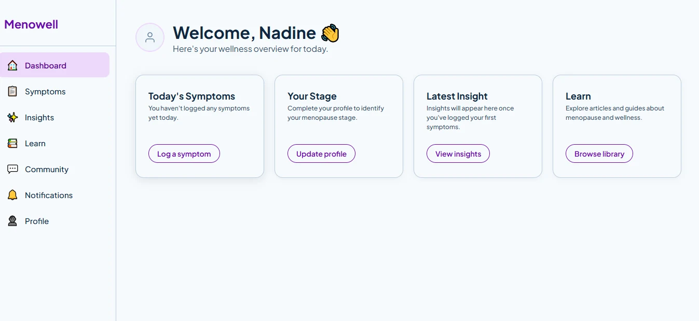
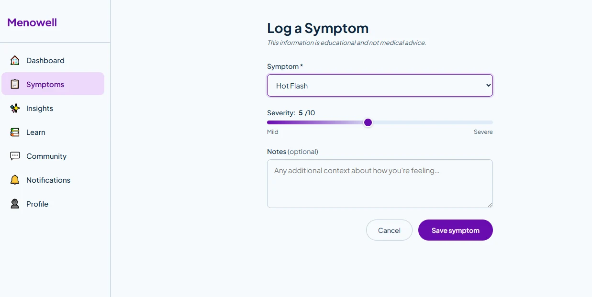
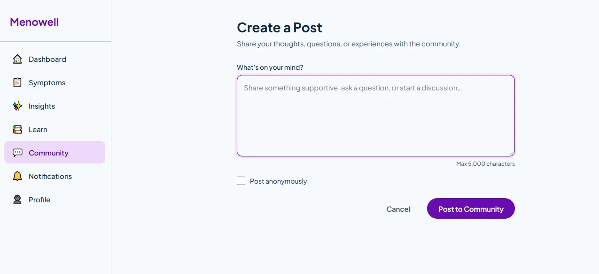
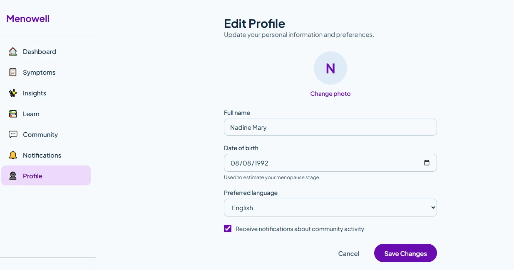
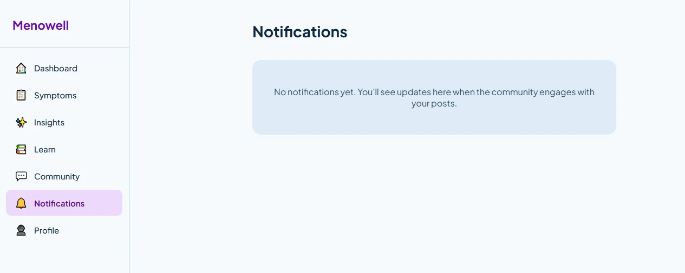
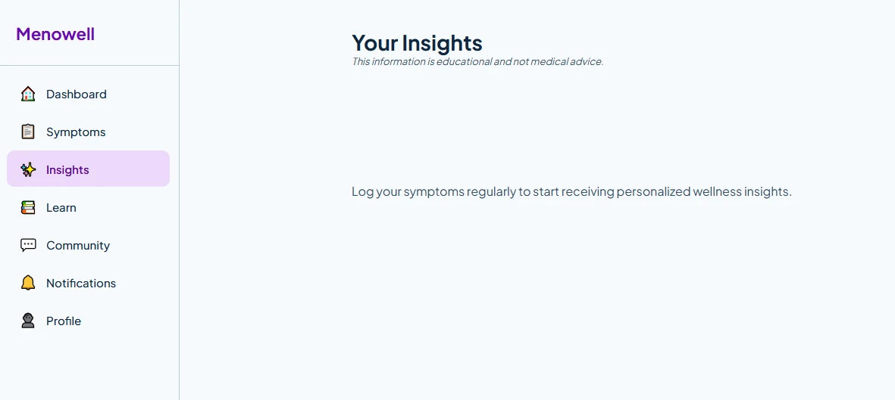

Structured daily tracking
Logging is broken into a simple daily flow, reducing the effort of recording complex symptoms more than once a day.
Project overview Women's health
Track, understand and manage the menopause journey.
A menopause support platform designed, built and deployed with AI-assisted development — bringing symptom tracking, stage identification and community support into one calm web experience.

The problem & opportunity
Managing the biological transitions during menopause often lacks structured digital support. It can be hard to identify stages, make sense of symptoms, and find reliable guidance without having to piece information together from unrelated places.
Menowell brings daily tracking, stage identification, community sharing and tailored educational content into one product. The aim is to give users clarity during a phase of life that is still underserved by digital tools.
Designed to be sensitive, informative and empowering — giving users clarity during a phase of life that is often underserved by digital products.
My role & design process
I led product thinking, UI design and AI-assisted development from the first flow to the deployed application.
Designed for women aged 35–65 moving through perimenopause, menopause and postmenopause, with a product that handles personal health information carefully.
I started with the problem and the stages users move through, then defined the product around tracking, understanding and support rather than a long list of features.
I mapped symptom tracking, stage identification and community paths so the experience stayed clear instead of feeling overwhelming.
I turned the visual direction into reusable type, spacing and components, giving tracking, dashboards and community screens a consistent and calm design language.
I built the web application with AI-assisted development, reviewed the screens in the browser and deployed the finished build to Vercel.
Key design decisions
The product handles personal health information. These decisions keep it clear and usable.
Logging is broken into a simple daily flow, reducing the effort of recording complex symptoms more than once a day.
Perimenopause, menopause and postmenopause are treated as distinct stages so the guidance can meet users where they are.
Community sharing sits alongside the tracking tools, so support is part of the product rather than a separate destination.
Restrained colour, readable typography and reusable components keep the dashboard, tracking and community screens coherent.
Plain wording and visible privacy controls help people understand what they are recording and stay in control of it.
Notifications support the tracking routine without turning a personal health journey into a stream of alerts.
The final experience
The views below are from the deployed Menowell web application. Select any screen to open a larger view.

A focused entry screen: choose a symptom, set severity, add optional context and save. The educational disclaimer stays visible.

Community sharing stays simple, with an anonymous option and a clear character limit before anything is posted.

Personal details and preferences in one place, including the date of birth used to estimate menopause stage and control over community notifications.

A clear empty state explains what will appear here, instead of leaving an unexplained blank screen.

An honest empty state: insights appear once symptoms have been logged, with the same educational disclaimer kept in view.
Outcome & key learnings
Menowell moved from product thinking and design into a deployed web application. It is a working product, not just a design concept.
The case study covers the built experience — tracking, community and notifications — and keeps conceptual ideas separate from what is live. AI helped accelerate the process; the design and product decisions stayed human-led.
Product thinking, user flows, responsive interface design, design systems and visual hierarchy in a sensitive health context.
A deployed web application with AI-assisted development, symptom tracking, community pages and notifications.
Designing for sensitive data means treating clear language and consent as part of the experience, not as an afterthought.
Defining the stages and user needs early determined which features belonged in the first version.
AI-assisted development turned the design into a working, deployed product while the design intent stayed human-led.
Conceptual, not shipped: expert-support integrations are an idea for a later version, not part of the deployed Menowell build.
See it in use
The deployed web application is the same product described above.
The Menowell dashboard — today's symptoms, menopause stage, latest insight and a route into the learn library.